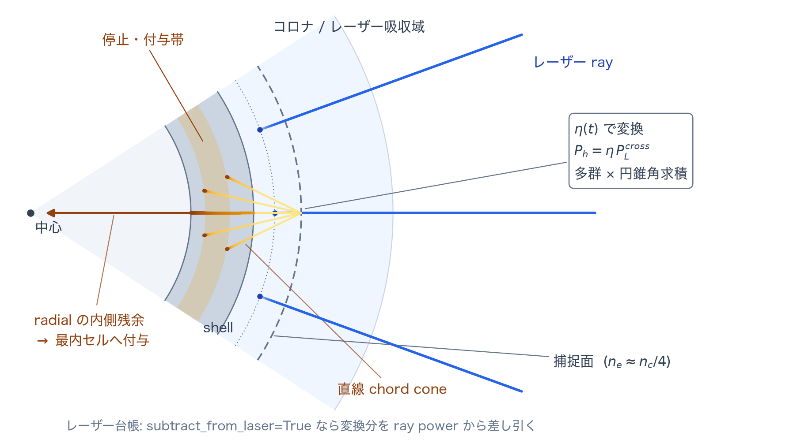

ホット電子 reference
TENRYU のホット電子モデルは、Colaïtis (2015) / LILAC 型の、あらかじめ与える形の LPI（レーザープラズマ不安定性）予熱を、レーザーの捕捉、指数スペクトル、円錐方向の求積、直線の弦に沿う輸送、衝突による減速、物質へのエネルギー付与として組み立てたものである。LPI の波の成長や飽和を自己無撞着に解くのではなく、変換効率 η(t) とホット電子温度を、較正された入力または縮約モデルから与える。
物理機構
レーザー強度が閾値を超えると、パラメトリック不安定性——2 プラズモン崩壊（TPD）と誘導ラマン散乱（SRS）——が大振幅の電子プラズマ波を励起する。舞台が四分の一臨界密度付近になるのは、そこで娘波の電子プラズマ波の振動数がレーザー振動数の約半分となり、TPD・SRS の周波数整合条件を満たせるからである。励起されたプラズマ波は電子を捕捉し、熱的な主成分をはるかに超える数十〜数百 keV まで加速する。その飛程は熱的な電子よりずっと長いため、衝撃波に先行してシェルを貫き、燃料を予熱して断熱度を上げ、圧縮性能を劣化させる。この予熱を定量化することが、本カーネルの目的である。
これらの不安定性は、輻射流体のメッシュでは解像できない運動論的かつ波長以下のスケールで起こるため、TENRYU は波の成長や飽和そのものを解かない。Colaïtis/LILAC の考え方に従い、変換効率 η(t) とホット電子温度 \(T_h\)（namelist の T_hot_eV）は較正された入力とするか、局所のプラズマ量で駆動される縮約クロージャから η を与える。生成源は物理が実際に起こる場所、すなわち追跡した各光線が最初に \(n_e=f_s n_c\) を横切る点に置き、そこまでの上流吸収を生き延びたパワーを使う。
観測されるホット電子のスペクトルは、単一温度の指数分布でおおよそ表せる。TENRYU はこの指数分布を対数刻みの群に分け、解析的なモーメントから重みと流束平均の代表エネルギーを作る。各群の重みは累積分布の端点値の差として作るので、総和すると中間項が打ち消し合い、\(\sum_g W_g=1\) が数値求積なしで厳密に成り立つ。方向は捕捉方向を軸とする決定論的な一様円錐で、無作為抽出ではなく求積を使うため、実行のたびにビット単位で再現する。
輸送に関する近似も明示してある。弦は直線である。対象は光ではなく 100 keV 程度の電子なので屈折はなく、v1 では角度散乱も含まない。自由電子による連続的な減速には、相対論的な運動学とクーロン対数を使う。\(\Delta P=\dot N_g(E_{in}-E_{out})\) という記帳の仕方により、積分誤差は付与の位置を隣接セルのあいだで動かすだけで、群のパワーを生み出したり消したりはしない。すべてのパワーは、付与・逸出・（該当する場合は）飛行中のいずれかの台帳へ入る。光学系の台帳をまとめる経路（捕捉パワーの評価に、光線ごとに蓄えておいた上流の光学的厚さを再利用する経路）では、「付与 + 未吸収 + \(P_{hot}\) = 入力」が相対 \(10^{-10}\) 以内で閉じることを判定基準とする。
モデルの適用範囲と捕捉源
Laser.hot_electron.enable=True でモデルを有効にする。基本の処方では、追跡した各光線が外側から内側へ進み、初めて \(n_e=f_s n_c\) を上向きに横切る位置を生成源とする。既定の \(f_s=\)source_nc_fraction は 0.25 で、四分の一臨界密度付近の LPI 活性帯を表す。交差を含む区間はその点で分割し、交差より手前の逆制動輻射（IB）吸収を先に適用する。したがって源のパワーは、区間の入口における値ではなく、捕捉面に実際に到達した値である。
\(P_{ray}^{cross}\) は上流の処理を終えたあとのパワーである。CBET と共存できる経路では、CBET 適用後の最終的な伝播記録から捕捉するため、まだ交換を受けていない公称のビームパワーを使うことはない。通常 CBET とホット電子は排他だが、cbet.geometry_mode="port_section" と eta_mode="model" の組合せのときだけ排他が解除され、この CBET 適用後の規則で動作する。
η(t) の与え方は 4 通りある。単一円錐の簡易指定では、eta_hot が一定値を、eta_hot_table が初期化時に凍結する時間表を与える。sources は最大 4 つの cone / TPD / SRS チャネルを定義し、チャネルごとに捕捉面、定数または表の η、温度、エネルギー窓、角度帯を設定できる。複数のチャネルは \(f_s\) の昇順に発火し、レーザーの減耗も同じ順で逐次適用する。さらに eta_mode="model" は、局所のプラズマ量で駆動される η の時間発展を選ぶ。いずれもホット電子生成の縮約処方であり、自己無撞着な LPI の求解にはならない。
多群スペクトルと円錐角度モデル
生成源における電子数流束は、温度 \(T_h\) の指数分布に従う。T_hot_eV は eV 単位であり、keV の値ではない。
- \(P_h=\eta P^{cross}_{ray}\) — IB を適用したあとの、交差点におけるパワーである。捕捉を含む区間はイベント点で分割し上流の IB を先に適用するため、生成源が見るのは区間入口ではなく交差点のパワーになる。
- \(T_h=\texttt{T\_hot\_eV}\,\mathrm{eV\_to\_erg}\) — 設定したスペクトル温度を eV から erg へ変換してから、エネルギーモーメントを評価する。
- \(W_g\) と \(E_g\) — \(\phi_1\)、\(\phi_2\) から作る解析的なモーメントである。ここで \(u=E/T_h\) は規格化エネルギー、\(u_{g\pm1/2}\) は群の端、\(u_{min},u_{max}\) は窓の端である。差は打ち消し合って \(\sum_g W_g=1\) となり、\(E_g\) は各群の流束平均エネルギーである。
- 円錐の求積 — \(\mu\) についてのガウス–ルジャンドル点と \(\phi\) についての等間隔点の直積求積で、方向重みの総和は 1 である。
- \(f_s=\texttt{source\_nc\_fraction}=0.25\) — 既定の捕捉位置である四分の一臨界密度である。
subtract_from_laser— 二重計上を防ぐための契約である。捕捉のあとは \((1-\eta)P^{cross}\) がレーザーの経路を進む。
n_energy_groups 個の対数刻みの群を \([E_{min},E_{max}]=[\texttt{E\_min\_over\_Th}T_h,\texttt{E\_max\_over\_Th}T_h]\) に置き、指数分布の解析的なモーメントから、各群のパワー重みと流束平均の代表エネルギーを求める。既定は 30 群、\([0.2,8]T_h\) である。窓の外のパワーは捨てずに窓内の群へ再規格化するため、群重みの総和は 1 になる。
angular_model="cone" は、捕捉方向を軸として半角 theta_div_deg の立体角の円錐を作る。極角の余弦は n_mu 点のガウス–ルジャンドル、方位角は n_phi 点の等間隔求積で離散化し、方向重みの総和を 1 に規格化する。半角を広げると、同じ源のパワーが、長さと面密度の異なる弦へ分配される。radial は \(\mu=1\) で内向きに進む検証用のモードであり、円錐の有限の発散を置き換える実運用向けの近似ではない。
直線輸送とエネルギー付与

輸送の経路は、屈折も散乱も受けない直線の弦である。球幾何ではシェル面との交点を解析的に求め、内向き区間、近点、外向き区間の順にたどる。出発点がセルの内部にある場合も、最初の面までの部分区間を正確に扱う。各セルでは \(n_e,T_e,\rho\) を凍結し、相対論的な速度とクーロン対数を用いる連続減速近似（CSDA）で、自由電子による減速を積分する。エネルギー積分は適応刻みの 4 次ルンゲ–クッタ法だが、台帳は常に電子数流束と入口・出口のエネルギー差から計算する。
$$ \Delta P_{i,g}=\dot N_g\left(E_{in}-E_{out}\right). $$この形にしておけば、積分誤差が付与位置のセル間の配分を変えることはあっても、群の総パワーを増減させることはない。熱化の下限に達した残りはそのセルへ付与し、外側へ抜けた分は逸出の台帳へ入る。inner_bc="deposit_residual" は radial モード専用の境界規則で、内側境界へ届いた残りを、最も内側のボイドでないセルへ付与する。もう一方の "escape" は、残りを逸出として数える。円錐の弦は近点を回って外向きへ進むため、この radial 専用の境界指定は使わない。
捕捉から加熱まで：ステップごとの流れ
- 追跡した光線の上で捕捉イベントを検出する。交差する区間を分割し、上流側の IB を先に適用したうえで、イベントには交差点でのパワーを記録する。ゴーストコロナ帯 — 最外の物理セルより外側にあるトレース用のセル — での捕捉は境界セルへ寄せ、その回数を数えて報告する。
- 光線の集合を、16 ビン固定の \((\text{source cell},\mu_{axis})\) 表へ縮約する。各ビンは \(\mu_{axis}\) と生成源の半径 \(r_s\) の双方について、パワーで重み付けした連続的な代表値を保持し、出発点をセル面へ丸めることはしない。
- 空でない各ビンを、対数刻みのエネルギー群と決定論的な円錐方向へ展開し、スペクトル重みと角度重みの積を持たせる。
- 各微小ビームを弦に沿って進める。シェルとの解析的な交点により、内向き区間・近点・外向き区間の順序と、最初の部分区間を正確に保つ。セルごとに \(n_e,T_e,\rho\) を凍結し、部分ステップあたりのエネルギー変化 2% を目標、セルあたり最大 256 部分ステップとする適応 4 次ルンゲ–クッタ法で、CSDA による減速を積分する。
- 各セルへ \(\Delta P=\dot N(E_{in}-E_{out})\) を付与する。熱化の下限に達した残りはその場で付与し、外側境界を横切る分は逸出とし、radial モードでの内側の残りは
inner_bcに従う。 - 台帳を閉じ、物質へ連成する。セルごとのホット電子パワーは、沈着の平滑化を経てレーザーの源チャネルへ合流し、2 温度計算では電子の内部エネルギーを加熱する。
"hot_electron"という名前の制限が、次のステップを \(\Delta t\le f_E\min_{P_i>0}(m_i e_{e,i}/P_i)\)、\(f_E=\texttt{explicit\_source\_limit}\) で制限する。
レーザー台帳、物質との連成、時間刻み
subtract_from_laser=True では、捕捉後の光線を \((1-\eta)P_{ray}^{cross}\) として継続する。これにより、同じパワーを熱的なレーザー吸収とホット電子予熱の両方に数えてしまうことを防げる。False は、レーザーを減耗させずに外から追加のホット電子エネルギーを加える、意図的な感度解析用のモードであり、通常の実行におけるエネルギー閉包ではない。チャネルが複数ある場合、下流のチャネルは上流のチャネルが減耗させたあとのパワーを受け取る。
セルごとのホット電子パワーは、レーザー沈着の平滑化を経てレーザーの源チャネルへ合流する。その先は標準の源の注入が担当し、2 温度計算では電子の比内部エネルギーを、1 温度計算では単一の物質エネルギーを加熱する。陽的な源による 1 ステップあたりの過大な加熱を避けるため、"hot_electron" という名前の制限が、前ステップの付与パワーから次の時間刻みを制限する。
ここで \(m_i\) はセル \(i\) の質量（イオン質量ではない）、\(e_{e,i}\) はその比電子内部エネルギーで、\(m_ie_{e,i}\) がセルの電子エネルギーの蓄えである。核燃焼カーネルの同名キー explicit_source_limit と同じ構成 — dt ≤ \(f_E\) × 利用可能な内部エネルギー / 付与パワー — であり、蓄えの取り方だけが違う（こちらは電子エネルギー、燃焼側は電子+イオンの内部エネルギー）。この制限はレーザーの CFL 条件の別名ではなく、ホット電子の陽的な源に固有のものである。診断では、生成・付与・逸出の各パワーと保存の残差を追跡でき、subtract_from_laser による減耗はレーザーの台帳にも反映される。
η(t) の物理モデルという選択肢
eta_mode="model" は、定数や表で与える η を、TPD / SRS のチャネルごとの 1 次緩和方程式へ置き換える、1D 球対称向けの明示指定オプションである。各ステップで捕捉面付近の \(T_e\) と密度勾配長 \(L_n\) を評価し、前ステップの交差点におけるパワーから照射強度を作る。TPD または SRS の規格化した閾値パラメータがしきい値以下なら \(\eta_{eq}=0\) とし、しきい値を超えると飽和形の平衡効率を作って、チャネル個別の上限と全チャネル合計の上限を適用する。時間更新は、固定または Vu 2012 型の緩和時間を用いる厳密な指数緩和である。
強度の計測は 1 ステップ遅れなので、初期の η は 0、最初のステップは交差点でのパワーの計測にあて、次のステップから 0 でない発展が始まる。このオプションは、sources による TPD / SRS チャネル、subtract_from_laser=True、単一ランクの 1D_SPH を必要とする。局所条件に応じて η を変えはするが、解像されたプラズマ波、非線形な LPI の飽和、運動論的な電子生成を解いているわけではない。
主要な制御項目
以下は Laser.hot_electron の主要キーである。チャネル形式は、スカラーによる簡易指定と同時には指定できない。
| キー / モード | 既定値 | 用途 |
|---|---|---|
enable | False | ホット電子による予熱を有効化。 |
eta_hot | 0.0 | 単一円錐の簡易指定における、一定の変換効率。 |
eta_hot_table | なし | 初期化時に凍結する η(t) の表。指定時は定数より優先する。 |
sources | なし | cone / TPD / SRS の機構別チャネル列。各チャネルに定数または表の η を設定する。 |
eta_mode="model" | "legacy" | TPD / SRS について、局所量で駆動される η(t) の緩和モデルを選択。 |
source_nc_fraction | 0.25 | 単一生成源の捕捉密度 \(n_e/n_c\)。 |
T_hot_eV | 5.0e4 | 指数スペクトルの温度 [eV]。 |
n_energy_groups | 30 | 対数刻みのエネルギー群数。 |
E_min_over_Th / E_max_over_Th | 0.2 / 8.0 | 多群スペクトルの窓 \(E/T_h\)。 |
angular_model | "cone" | 円錐角の輸送。"radial" は検証用である。 |
theta_div_deg | 60.0 | 円錐の発散半角 [deg]。 |
n_mu / n_phi | 6 / 8 | 極角余弦 / 方位角の求積点数。 |
subtract_from_laser | True | 変換した分を光線のパワーから逐次差し引く。 |
inner_bc | "deposit_residual" | radial モードで内側境界に残った分を最内セルへ付与する。 |
explicit_source_limit | 0.2 | "hot_electron" の時間刻み制限に使う \(f_E\)。 |
検証と適用上の制限
- スカラー 1D の台帳の恒等式 \(|P_{dep}+P_{esc}-P_h|/P_h\) は構成上閉じており、GXII をもとにした簡易試験での実測最大値は \(7\times10^{-15}\) である。
- 機構別チャネルの検査では、機能を無効にしたときの GXII 基準解が 53/53 のスナップショットで相対差 0、スカラーの簡易指定と
sources=[cone]が 55/55 のスナップショットで一致する。3 チャネル・20 ps の実行では各チャネルが \(1.6\times10^{-14}\) 以内で閉じ、チャネル台帳の総和と全体の台帳は \(3\times10^{-16}\) 以内で一致した。 - 平面配置での角度依存性を固定した検査 — 200 セルの平面スラブで \(T_h\)・η・\(f_s\) を 4 つの脚すべてで同一に保ち、発射角だけを変える構成 — では、付与の 90% 深さが cone 0°、SRS 20°、cone 60°、TPD 45° の順にセル 154、152、144、142 となり、吸収割合はそれぞれ 0.734、0.742、0.805、0.820 で、事前登録した単調順のとおりである。
- η(t) の物理モデルに対する検査は、緩和の更新と、捕捉・減耗・診断のつながりを確認する。
現在のモデルは自由電子による減速だけを含み、束縛電子、プラズモン、縮退、衝突による角度散乱、再流入（reflux：逃げた電子がシース電場で標的へ戻る過程）は扱わない。とくに低温で部分電離した物質では、減速を過小に、飛程を過大に評価し得る。η と \(T_h\) は較正に依存するため、結果は LPI の第一原理的な予測ではなく、指定した生成クロージャに対する予熱の応答として解釈すること。
参考文献
- A. Colaïtis et al., "Coupled Hydrodynamic Model for Laser-Plasma Interaction and Hot Electron Generation," Phys. Rev. E 92, 041101(R) (2015). doi:10.1103/PhysRevE.92.041101
- H. X. Vu et al., "Hot-Electron Production and Suprathermal Heat Flux Scaling with Laser Intensity from the Two-Plasmon-Decay Instability," Phys. Plasmas 19, 102703 (2012). doi:10.1063/1.4757978
- R. K. Follett et al., "Simulations and Measurements of Hot-Electron Generation Driven by the Multibeam Two-Plasmon-Decay Instability," Phys. Plasmas 24, 102134 (2017). doi:10.1063/1.4998934
- E. Rovere et al., "Hot Electron Scaling for Two-Plasmon Decay in ICF Plasmas," Phys. Plasmas 30, 042104 (2023). doi:10.1063/5.0128052
- M. J. Rosenberg et al., "Origins and Scaling of Hot-Electron Preheat in Ignition-Scale Direct-Drive Inertial Confinement Fusion Experiments," Phys. Rev. Lett. 120, 055001 (2018). doi:10.1103/PhysRevLett.120.055001
- M. J. Rosenberg et al., "Stimulated Raman Scattering Mechanisms and Scaling Behavior in Planar Direct-Drive Experiments at the National Ignition Facility," Phys. Plasmas 27, 042705 (2020). doi:10.1063/1.5139226
- A. A. Solodov et al., "Hot-Electron Generation at Direct-Drive Ignition-Relevant Plasma Conditions at the National Ignition Facility," Phys. Plasmas 27, 052706 (2020). doi:10.1063/1.5134044
- A. Simon, R. W. Short, E. A. Williams, and T. Dewandre, "On the Inhomogeneous Two-Plasmon Instability," Phys. Fluids 26, 3107–3118 (1983). doi:10.1063/1.864037